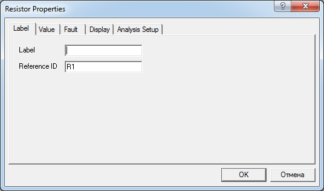
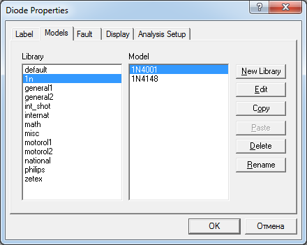
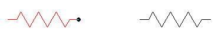
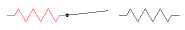
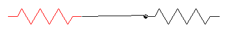
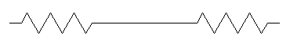

Electronics Workbench
Основные приемы работы
в Electronics Workbench
В Electronics Workbench сборка схемы осуществляется в рабочей области. Элементы (компоненты) для сборки схемы берутся из окна выбора элементов, которая вызывается щелчком на соответствующей кнопке, расположенных непосредственно над рабочим полем.
Чтобы переместить требуемый компонент в рабочую область, нужно поместить на него курсор и нажать левую кнопку мыши. Затем, удерживая кнопку в нажатом состоянии, "перетащить" элемент, двигая мышь, в требуемое положение в рабочей области и отпустить кнопку.
Чтобы осуществить какие-либо операции над элементом его необходимо выделить. Выделение элемента осуществляется щелчком мыши на элементе, при этом он окрашивается в красный цвет.
Если необходимо повернуть элемент, нужно сначала его выделить, а затем использовать комбинацию клавиш [Ctrl+R], нажатие которых приводит к повороту элемента на 90°.
Для удаления элемента его также необходимо сначала выделить, а затем нажать клавишу [Del] и в ответ на запрос о подтверждении удаления нажать кнопку подтверждения или отмены удаления.
Все электронные компоненты характеризуются своими параметрами, определяющими их поведение в схеме. Чтобы задать эти параметры нужно дважды щелкнуть мышью на нужном элементе, в результате чего появится диалоговое окно свойств, в котором необходимо выбрать или записать требуемые параметры и закрыть его нажатием кнопки "Ok".

Рис. 1 - Вкладка Label окна свойств элемента
Окно свойств можно вызвать также нажатием правой кнопки мышки и выбором соответствующего пункта контекстного меню. Для резисторов, конденсаторов и катушек индуктивности используется закладка Value.
Установка параметров сложных и активных элементов (диодов, транзисторов, длинных линий и т. д), производится выбором вкладки Models и выбором пунктов меню Default и Ideal или выбором типа элемента из имеющейся библиотеки.

Рис. 2 - Вкладка Models окна свойств диода
Иногда возникает необходимость изменения библиотечных параметров элемента. Для этого используется кнопка Edit. При установке параметров элементов особое внимание обратите на размерности параметра (кило, мега, пико, нано и т. д).
Чтобы соединить между собой выводы элементов подведите курсор к нужному выводу, при этом, если к этому выводу действительно можно подсоединить проводник, на нем появится маленький черный кружок (рис. 3,а). При появлении кружка нажмите левую кнопку мыши и, не отпуская ее, протащите курсор к другому выводу (рис. 3,б). Когда на другом выводе тоже появится черный кружок (рис. 3,в), отпустите кнопку, и эти выводы автоматически будут соединены проводником (рис. 3,г).
 |
 |
| а) | б) |
 |
 |
| в) | г) |
Рис. 2 - Соединение элементов
Если вывод элемента нужно подсоединить к уже имеющемуся проводнику, то подведите курсор мыши при нажатой кнопки к этому проводнику, при этом также в том месте, где можно сделать подсоединение появится маленькая окружность. В этот момент отпустите кнопку, и в схеме автоматически образуется проводящее соединение между проводниками, обозначенное черным кружком.
Источники
studfile.net - Создание схемы радиоэлектронного устройства с помощью программы Electronics Workbench